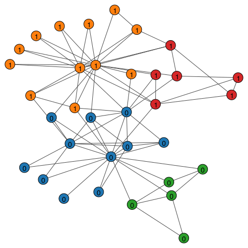

Networks are high-dimensional discrete structures that resist traditional machine learning algorithms designed for continuous data. Network embedding transforms graphs into low-dimensional continuous spaces where each node becomes a point in \mathbb{R}^d (typically d \ll N) while preserving important structural properties.
The goal is simple but powerful. Map nodes to vectors such that similar nodes have similar embeddings.
What does “similar” mean? It can mean many things: connected by edges, sharing neighbors, playing similar structural roles, or belonging to the same community.
Spectral Embeddings
Let’s talk about spectral methods. They use eigendecomposition to find low-dimensional representations. We explore three approaches: adjacency-based, modularity-based, and Laplacian-based.
Compressing Networks
Suppose we have an adjacency matrix {\bf A} of size N \times N. We want to compress it into a matrix {\bf U} of size N \times d where d \ll N.
Good embeddings should reconstruct the original network well:
where \|\cdot\|_F is the Frobenius norm (sum of squared elements). The outer product {\bf U}{\bf U}^\top reconstructs the adjacency matrix from embeddings. Minimizing the difference between {\bf A} and this reconstruction yields the best low-dimensional representation.
Spectral Decomposition Solution
How do we solve this optimization problem? Consider the eigendecomposition of {\bf A}:
Each term \lambda_i {\bf u}_i {\bf u}_i^\top is a rank-one matrix capturing part of the network structure. Eigenvalues \lambda_i indicate importance.
To compress the network, select the d eigenvectors with largest eigenvalues and form embedding matrix {\bf U} = [{\bf u}_1, {\bf u}_2, \ldots, {\bf u}_d]. This is provably optimal for minimizing reconstruction error.
Modularity Embedding
What if we want to emphasize community structure? Instead of the adjacency matrix, we can embed the modularity matrix:
where k_i is node degree and m is the number of edges. The modularity matrix emphasizes connections beyond what random chance predicts.
Its eigenvectors naturally separate communities. A simple community detection algorithm: group nodes by the sign of the second eigenvector (Newman 2006).
Laplacian Eigenmap
Laplacian Eigenmap (Belkin and Niyogi 2003) positions connected nodes close together. The optimization problem is:
The solution is the d eigenvectors corresponding to the smallest eigenvalues of {\bf L} (excluding the trivial zero eigenvalue). The smallest eigenvalue is always zero with eigenvector of all ones. In practice, compute d+1 smallest eigenvectors and discard the first.
Neural Embeddings with word2vec
Spectral methods are elegant but computationally expensive for large graphs. What’s the alternative?
Neural methods learn embeddings using neural networks trained on data. Before applying these to graphs, we introduce word2vec, which forms the foundation for many graph embedding techniques.
How word2vec Works
word2vec (Mikolov et al. 2013) learns word meanings from context, following the principle: “You shall know a word by the company it keeps” (church1988word?). This phrase comes from Aesop’s fable The Ass and his Purchaser. A man brings an ass to his farm on trial. The ass immediately joins the laziest, greediest ass in the herd. The man returns it, knowing its character by the company it chose.
The core idea is simple. Given a target word, predict surrounding context words within a fixed window. For example, in “The quick brown fox jumps over a lazy dog,” the context of fox (window size 2) includes quick, brown, jumps, over.
Words appearing in similar contexts get similar embeddings. Both fox and dog appear with “quick,” “brown,” and action verbs, so they have similar embeddings. But student appears with “studies” and “library,” giving it a distant embedding.
The network architecture has three layers. The input layer uses one-hot encoding of the target word. The hidden layer holds the learned word embedding (low-dimensional). The output layer produces a probability distribution over context words using softmax.
The hidden layer activations become dense, low-dimensional vectors capturing semantic relationships. For a visual walkthrough, see The Illustrated Word2vec by Jay Alammar.
Efficient Training
Why don’t we use this architecture directly? Computing the full softmax over vocabulary is expensive:
The denominator sums over all words (100,000+ terms), making training slow.
Two solutions exist:
Hierarchical Softmax: Organizes vocabulary as a binary tree. Computing probability becomes traversing root-to-leaf paths, reducing complexity from \mathcal{O}(|V|) to \mathcal{O}(\log |V|).
Figure 2
Negative Sampling: Instead of normalizing over all words, sample a few “negative” (non-context) words and contrast them with true context words. This approximates the full softmax efficiently with 5-20 negative samples.
word2vec’s Power
What makes word2vec special? word2vec embeddings capture semantic relationships through simple linear algebra:
Figure 3
Famous examples include analogies: man is to woman as king is to queen. Relationships like countries and capitals form parallel vectors in the embedding space.
Graph Embedding with word2vec
How can we apply word2vec to graphs? The challenge is that word2vec expects sequences, while graphs are unordered.
The solution: random walks transform graphs into sequences of nodes. Treat walks as sentences and nodes as words. Random walks create “sentences” from graphs where each walk is a sequence of nodes, just like a sentence is a sequence of words.
Treat walks as sentences and feed them to word2vec
DeepWalk uses skip-gram with hierarchical softmax for efficient training. Nodes appearing in similar walk contexts get similar embeddings.
node2vec
What if we want more control over the random walks? node2vec (Grover and Leskovec 2016) extends DeepWalk with biased random walks controlled by parameters p and q:
where d(t,x) is the shortest path from previous node t to candidate x. Low p creates return bias (local revisiting). Low q creates outward bias (exploration, DFS-like). High q creates inward bias (stay local, BFS-like).
These parameters enable two exploration strategies. BFS-like walks (low q) explore immediate neighborhoods and capture community structure. DFS-like walks (high q) explore deep paths and capture structural roles.
Note that node2vec uses negative sampling instead of hierarchical softmax, affecting embedding characteristics (Kojaku et al. 2021; Dyer 2014).
LINE
LINE (Tang et al. 2015) is equivalent to node2vec with p=1, q=1, and window size 1. It directly optimizes graph structure preservation.
Neural methods seem less transparent than spectral methods, but recent work establishes equivalences under specific conditions (Qiu et al. 2018; kojaku2024network?). Surprisingly, DeepWalk, node2vec, and LINE are provably optimal for stochastic block models (kojaku2024network?).
Hands-On: Implementing Embeddings
Let’s implement these methods on the Karate Club network.
Data Preparation
# Load the karate club networkg = igraph.Graph.Famous("Zachary")A = g.get_adjacency_sparse()# Get community labels (Mr. Hi = 0, Officer = 1)labels = np.array([0, 0, 0, 0, 0, 0, 0, 0, 1, 1, 0, 0, 0, 0, 1, 1, 0, 0, 1, 0, 1, 0, 1, 1, 1, 1, 1, 1, 1, 1, 1, 1, 1, 1])g.vs["label"] = labels# Visualize the networkpalette = sns.color_palette().as_hex()igraph.plot(g, vertex_color=[palette[label] for label in labels], bbox=(300, 300))
Spectral Embedding Example
# Compute the spectral decompositionA_dense = A.toarray()eigvals, eigvecs = np.linalg.eig(A_dense)# Find the top d eigenvectorsd =2sorted_indices = np.argsort(eigvals)[::-1][:d]eigvecs_top = eigvecs[:, sorted_indices]
/Users/skojaku-admin/miniforge3/envs/advnetsci/lib/python3.11/site-packages/matplotlib/cbook.py:1709: ComplexWarning: Casting complex values to real discards the imaginary part
return math.isfinite(val)
/Users/skojaku-admin/miniforge3/envs/advnetsci/lib/python3.11/site-packages/matplotlib/cbook.py:1709: ComplexWarning: Casting complex values to real discards the imaginary part
return math.isfinite(val)
/Users/skojaku-admin/miniforge3/envs/advnetsci/lib/python3.11/site-packages/pandas/core/dtypes/astype.py:133: ComplexWarning: Casting complex values to real discards the imaginary part
return arr.astype(dtype, copy=True)
/Users/skojaku-admin/miniforge3/envs/advnetsci/lib/python3.11/site-packages/pandas/core/dtypes/astype.py:133: ComplexWarning: Casting complex values to real discards the imaginary part
return arr.astype(dtype, copy=True)
The first eigenvector corresponds to eigencentrality. The second eigenvector captures community structure, clearly separating the two groups.
Laplacian Eigenmap Example
# Compute the LaplacianD = np.diag(np.sum(A_dense, axis=1))L = D - A_denseeigvals_L, eigvecs_L = np.linalg.eig(L)# Sort and select eigenvalues (exclude first)sorted_indices_L = np.argsort(eigvals_L)[1:d+1]eigvecs_L_top = eigvecs_L[:, sorted_indices_L]
def random_walk(net, start_node, walk_length):"""Generate a random walk starting from start_node.""" walk = [start_node]whilelen(walk) < walk_length: cur = walk[-1] cur_nbrs =list(net[cur].indices)iflen(cur_nbrs) >0: walk.append(np.random.choice(cur_nbrs))else:breakreturn walk# Generate random walksn_nodes = g.vcount()n_walkers_per_node =10walk_length =50walks = []for i inrange(n_nodes):for _ inrange(n_walkers_per_node): walks.append(random_walk(A, i, walk_length))print(f"Generated {len(walks)} random walks")print(f"Example walk: {walks[0][:10]}...")
Generated 340 random walks
Example walk: [0, 13, 2, 0, 3, 13, 3, 12, 3, 12]...
# Train word2vec on the walksmodel = Word2Vec( walks, vector_size=32, window=3, min_count=1, sg=1, # Skip-gram hs=1, # Hierarchical softmax workers=1,)# Extract embeddingsembedding = np.array([model.wv[i] for i inrange(n_nodes)])print(f"Embedding matrix shape: {embedding.shape}")
Embedding matrix shape: (34, 32)
/Users/skojaku-admin/miniforge3/envs/advnetsci/lib/python3.11/site-packages/umap/umap_.py:1952: UserWarning: n_jobs value 1 overridden to 1 by setting random_state. Use no seed for parallelism.
warn(
OMP: Info #276: omp_set_nested routine deprecated, please use omp_set_max_active_levels instead.
Loading BokehJS ...
Nodes from the same community cluster together, showing that DeepWalk captures community structure.
# Visualize clusteringcmap = sns.color_palette().as_hex()igraph.plot( g, vertex_color=[cmap[label] for label in cluster_labels], bbox=(500, 500), vertex_size=20)

K-means successfully identifies communities using only learned embeddings, demonstrating that DeepWalk captures meaningful structural properties.
Comparing Approaches
Which method should you use? We have explored multiple embedding methods, each with distinct trade-offs:
Method
Approach
Strengths
Limitations
Spectral (Adjacency)
Eigendecomposition
Principled, captures centrality
Expensive, requires full graph
Laplacian Eigenmap
Minimize edge distances
Preserves local structure
Sensitive to disconnected components
DeepWalk
Random walks + word2vec
Scalable, flexible
Random initialization sensitive
node2vec
Biased random walks
Controls exploration
More hyperparameters
Spectral methods offer mathematical guarantees but scale poorly. Neural methods scale to large graphs and generalize to unseen nodes but require careful hyperparameter tuning.
Are these methods fundamentally different? Recent work shows these methods are more connected than they appear. Under specific conditions, neural embeddings provably approximate spectral embeddings (Qiu et al. 2018; kojaku2024network?). This bridges the gap between elegant theory and practical scalability.
Key Takeaways
Graph embeddings transform discrete networks into continuous vector spaces, enabling standard machine learning algorithms. Spectral methods use eigendecomposition to find optimal low-dimensional representations. Neural methods learn embeddings by treating random walks as training data for word2vec.
These embeddings power downstream tasks: node classification, link prediction, community detection, and visualization. They bridge the gap between graph theory and deep learning, showing that geometric intuitions about similarity and distance extend naturally to network data.
What have we learned in this module? We journeyed from pixels to nodes, extending convolution beyond regular grids. We explored spectral and spatial perspectives on graph neural networks. We learned how embeddings compress networks into vectors while preserving structure.
The principles transcend specific architectures. Locality matters. Parameter sharing generalizes. Hierarchical features extract increasingly abstract patterns. These insights apply wherever relationships exist, from molecules to social networks to knowledge graphs.
References
Belkin, Mikhail, and Partha Niyogi. 2003. “Laplacian Eigenmaps for Dimensionality Reduction and Data Representation.”Neural Computation 15 (6): 1373–96. https://doi.org/10.1162/089976603321780317.
Dyer, Chris. 2014. “Notes on Noise Contrastive Estimation and Negative Sampling.”arXiv Preprint arXiv:1410.8251.
Grover, Aditya, and Jure Leskovec. 2016. “Node2vec: Scalable Feature Learning for Networks.” In Proceedings of the 22nd ACM SIGKDD International Conference on Knowledge Discovery and Data Mining, 855–64.
Kojaku, Sadamori, Jisung Yoon, Isabel Constantino, and Yong-Yeol Ahn. 2021. “Residual2Vec: Debiasing Graph Embedding Using Random Graphs.” In Advances in Neural Information Processing Systems. Curran Associates, Inc.
Mikolov, Tomas, Ilya Sutskever, Kai Chen, Greg S Corrado, and Jeff Dean. 2013. “Distributed Representations of Words and Phrases and Their Compositionality.”Advances in Neural Information Processing Systems 26.
Newman, M. E. J. 2006. “Modularity and Community Structure in Networks.”Proceedings of the National Academy of Sciences 103 (23): 8577–82. https://doi.org/10.1073/pnas.0601602103.
Perozzi, Bryan, Rami Al-Rfou, and Steven Skiena. 2014. “Deepwalk: Online Learning of Social Representations.” In Proceedings of the 20th ACM SIGKDD International Conference on Knowledge Discovery and Data Mining, 701–10.
Qiu, Jiezhong, Yuxiao Dong, Hao Ma, Jian Li, Kuansan Wang, and Jie Tang. 2018. “Network Embedding as Matrix Factorization: Unifying Deepwalk, Line, Pte, and Node2vec.” In Proceedings of the Eleventh ACM International Conference on Web Search and Data Mining, 459–67.
Tang, Jian, Meng Qu, Mingzhe Wang, Ming Zhang, Jun Yan, and Qiaozhu Mei. 2015. “LINE: Large-Scale Information Network Embedding.” In Proceedings of the 24th International Conference on World Wide Web, 1067–77. WWW ’15. Republic; Canton of Geneva, CHE: International World Wide Web Conferences Steering Committee. https://doi.org/10.1145/2736277.2741093.